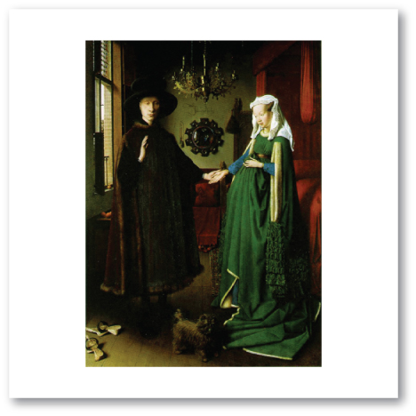
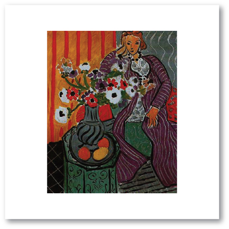
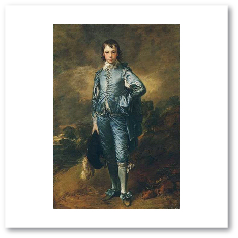
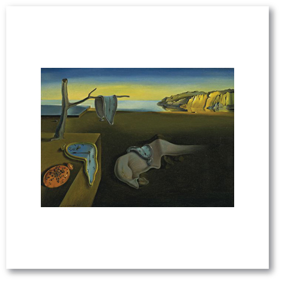
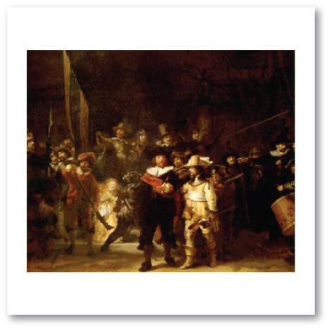

Music: “The Snow is Dancing” from “The Children's Corner Suite” by Claude Debussy, listen to it here
Art: “Woman with Dog” by Mary Cassatt
Music: “Minuet in G, Toccata & Fugue” by Johann Sebastian Bach, listen to it here and here
Art: “The Marriage of Giovanni Arnolfini and His Bride” by Jan van Eyck

Music: “Rhapsody in Blue” by George Gershwin, listen to an example here
Art: “The Purple Robe” by Henri Matisse

Music: “Sonata in C Major” by Wolfgang A. Mozart, listen to it here
Art: “Blue Boy” by Thomas Gainsborough

Music: "Hungarian Rhapsody #2” and "Liebestraum" by Franz Liszt, listen to it here and here
Art: “Persistance of Memory” by Salvador Dali

Music: “Les Toreadores” from the opera "Carmen" by George Bizet, listen to it here
Art: “Night Watch” by Rembrandt van Rijn

The links to the music may or may not work. We do not take any responsibility for the content of the linked web pages. Please be aware that comments on YouTube™ are outside our control.